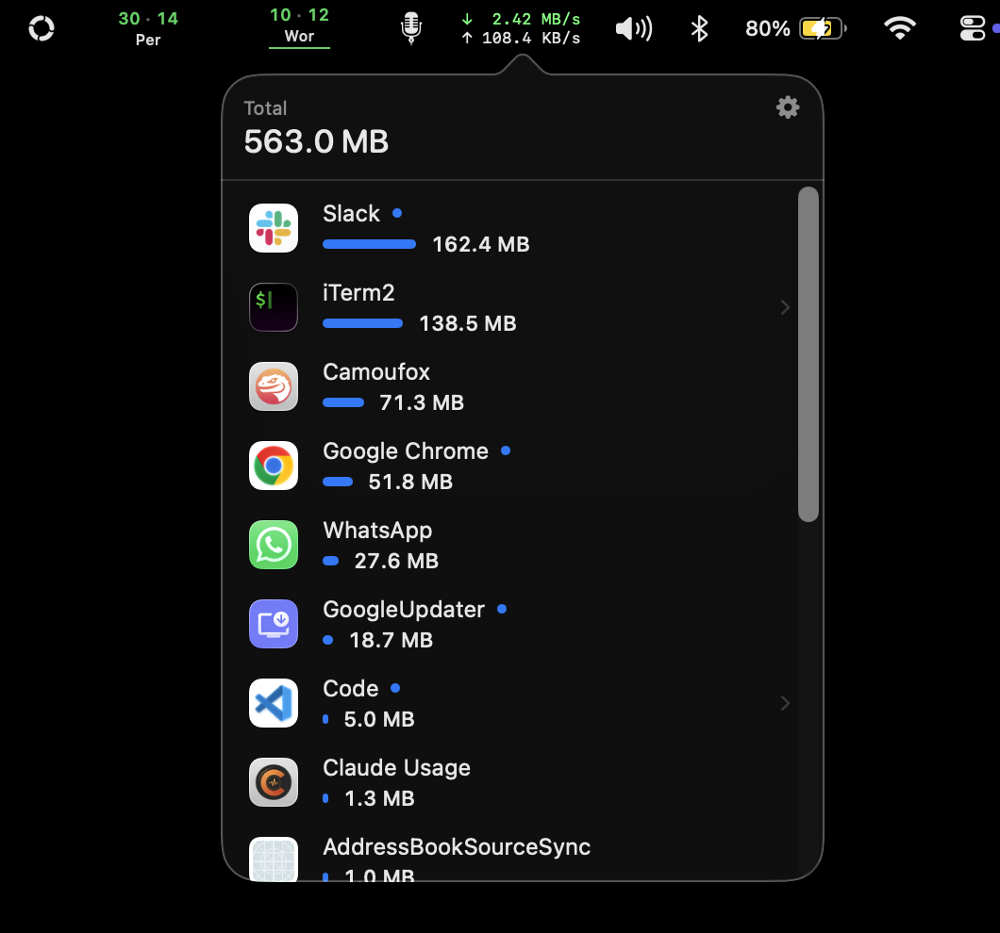
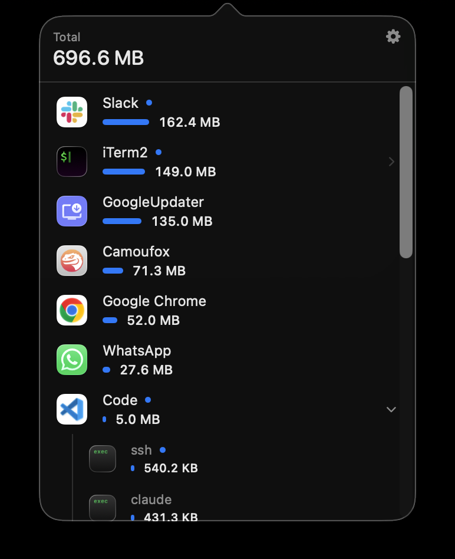
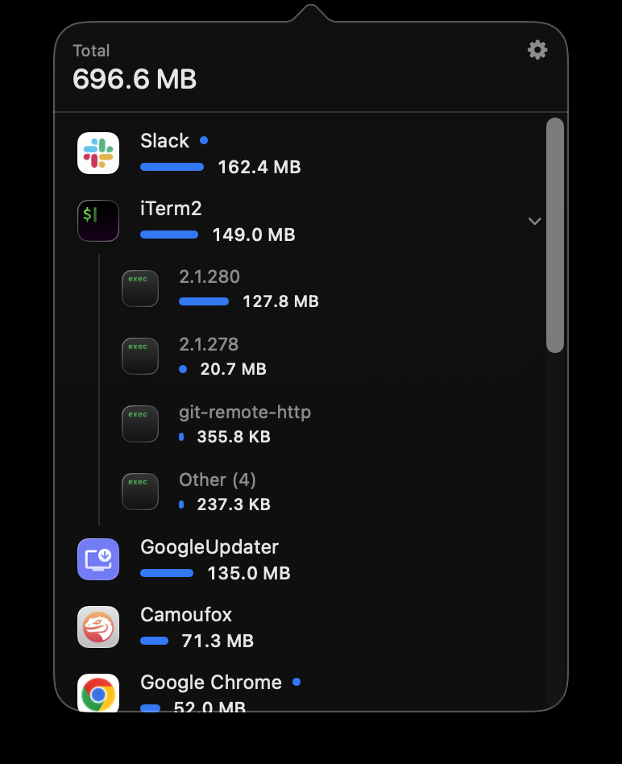
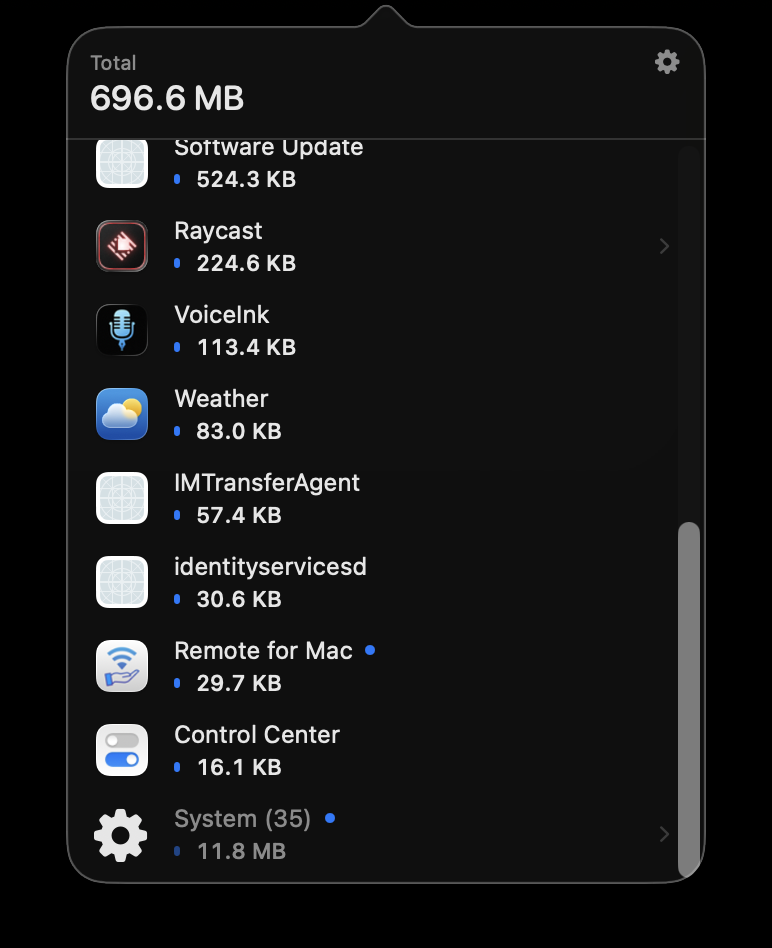
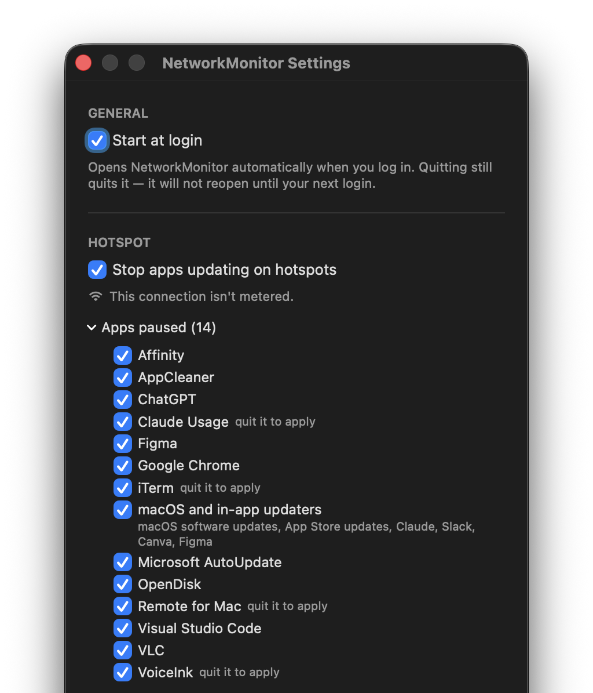
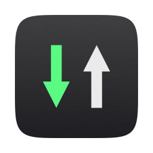
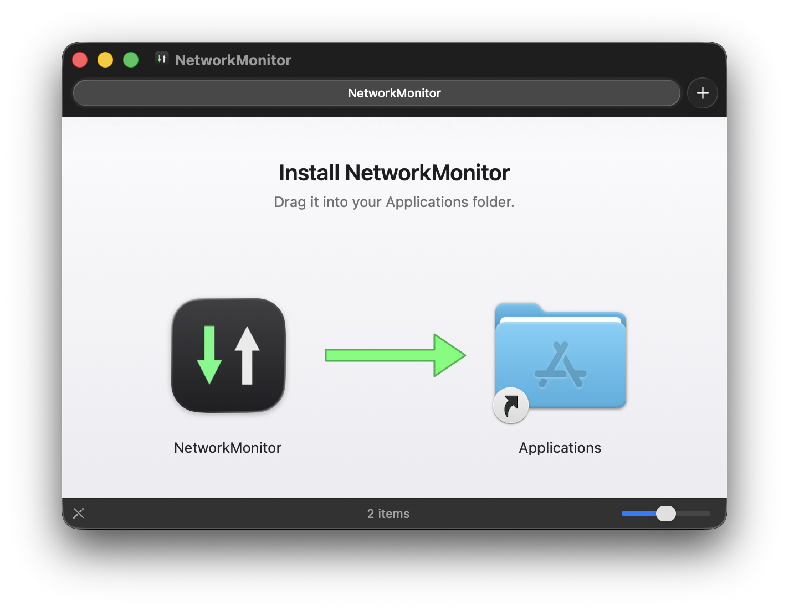

Updaters run on their own schedule.
Chrome, VS Code, Microsoft AutoUpdate, apps built on Sparkle, and macOS itself fetch new versions whenever they decide to. Nothing tells you when.
NetworkMonitor for Mac
Live network speed in your menu bar, and a straight answer to a question macOS never answers: which app used my data?

The problem
Apps update themselves, sync and download whenever they like. On home broadband you never notice. On a phone’s hotspot you pay for every megabyte, and macOS keeps no running tally of which app spent it.

Caught while this page was being made. GoogleUpdater went from 13.9 MB to 135 MB in about two minutes, in the background, on its own.
On home Wi‑Fi that was harmless. On a hotspot it would have been 135 MB of your plan, gone before you knew it had started.
Chrome, VS Code, Microsoft AutoUpdate, apps built on Sparkle, and macOS itself fetch new versions whenever they decide to. Nothing tells you when.
A browser runs a swarm of helper processes. A terminal launches git, ssh and command-line tools. In a raw process list, one app’s traffic is scattered across names you’ve never heard of.
It counts bytes since each process started, often days ago. It can’t tell you what the network you’re on right now has used.
AirPlay to an Apple TV, Time Machine to a NAS, Plex from your own server. All of it crosses your Wi‑Fi, and none of it touches your data plan.
Tethering is metered. If you only find out afterwards, when your carrier sends the warning, the data is already gone.
Whatever watches your connections is in a position to report on them. It should ask for nothing, send nothing, and let you read every line.
The solution
A small menu bar app that shows your speed live, tells you exactly which apps used this connection, and, if you ask it to, stops them updating while you’re on a hotspot. No Dock icon, no window to manage, no account.
Download and upload speed, always in view, updated twice a second.
Every app’s share of this connection, biggest first, with its own icon and bar.
Automatic updates pause on hotspots and resume the moment you leave.
In the menu bar
Download in green, upload in white: the same two arrows as the icon. The readout keeps a fixed width, so nothing beside it jitters as the numbers change, and it counts in bytes, the unit your data plan uses.
The real menu bar, mid-download.
One click
Click the readout for this connection’s total and the apps behind it. The numbers move while you watch.
Ten unedited seconds of the app, recorded off the screen. The total climbs as a download runs.
Sub-processes
Helpers fold into the app that owns them, so Chrome’s dozen helper processes are one Google Chrome row. Commands started from a terminal break out beneath it, each with its own figure.

System
Dozens of system daemons collapse into a single System row at the bottom of the list. Open it when you’re curious; ignore it when you’re not.

Sorted live
Every app gets a bar for its share of the total, and the list re-sorts as apps overtake each other.
Per connection
Join a different Wi‑Fi or hotspot and the count starts from zero. Drop out and rejoin the same network and it picks up where it left off. It also resets at midnight, and survives restarts.
Internet only
AirPlay, Time Machine to a NAS, Plex from your own server: they cross your Wi‑Fi but cost no internet data, so they’re never counted against you.
Hotspot mode
One setting. When you join a mobile hotspot, NetworkMonitor switches off your apps’ automatic updates, and switches them back on when you leave. Apps keep working. Chrome still browses, Slack still messages, VS Code still edits. They just don’t download new versions of themselves while you’re paying by the gigabyte.

iPhone Personal Hotspot and Android tethering, over Wi‑Fi or USB, from your phone or someone else’s. Any network you’ve put in Low Data Mode counts too. Settings always tells you what it decided about the connection you’re on.
Run make helper once and enter your administrator password. The helper can do exactly three things: suppress, restore and report. The settings it touches are compiled into it, so it can’t be asked to change anything else.
Not a firewall.It changes each app’s own “check for updates automatically” setting. A manual Check for Updates… still works: it stops unattended downloads, not you.
Security updates pause too.There’s no reliable way to tell a security patch from a feature release, and pretending otherwise would be worse. Leave the hotspot or turn the setting off and everything resumes.
Puts everything back.make uninstall restores every setting exactly as it found it, then removes the app and the helper.
Measured, not estimated
agreement with the kernel’s own byte counters, across three independent transfers.
of one CPU core for live speed and your connection total, running all the time.
of a core for per-app tracking, on every network and on battery. 256× less than earlier versions.
Samples every second when plugged in, every three on battery. Same totals either way.
Per-app rows won’t quite add up to the connection total: some traffic is wire-level overhead that belongs to no app. The big total is the one to trust.
Privacy
NetworkMonitor counts how much, never what. And it has no way to phone home.
It never asks for Location and doesn’t need it. The only thing that ever asks for your password is the optional hotspot helper, when you install it.
The app makes no outbound connections of any kind. No analytics, no telemetry, no update check, no account.
Your usage lives in a single local file that you can delete at any time.
MIT licensed. Read every line before you run it.

Free and open source, for macOS 13 or later on Apple silicon and Intel. Two ways to install it.
Option 1
The usual Mac way: open the disk image and drag NetworkMonitor into Applications.

On macOS 13 or 14 there’s a shortcut for steps 2 and 3: Control-click the app in Applications, choose Open, then Open again.
Updating: download the new version and drag it over the old one. Removing: drag it to the Trash, but not while it’s pausing updates on a hotspot, or those apps stay paused.
Option 2
Compile it from source in one go. An app you build yourself is never quarantined, so there’s nothing to approve. You’ll need Apple’s Command Line Tools (xcode-select --install), not Xcode and not a developer account.
$ git clone \ https://github.com/kevinabouhanna/NetworkMonitor.git $ cd NetworkMonitor $ ./Scripts/install.sh
That builds the app, installs it in /Applications and starts it at login.
make update./Scripts/install.sh --no-loginmake helper./Scripts/uninstall.shEither way, the optional hotspot helper, which also pauses macOS, App Store, Claude, Slack and Canva updates, installs from Terminal: clone the repository and run make helper.